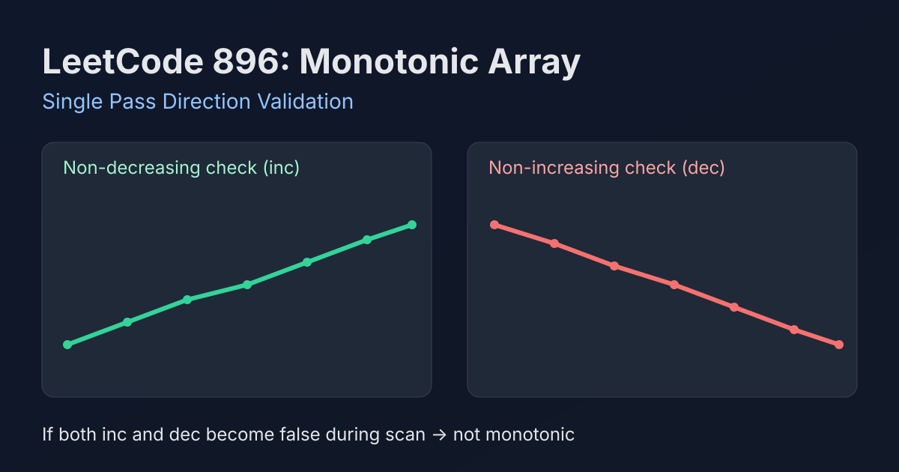

LeetCode 896: Monotonic Array (Single Pass Direction Validation)
LeetCode 896ArrayGreedyToday we solve LeetCode 896 - Monotonic Array.
Source: https://leetcode.com/problems/monotonic-array/

English
Problem Summary
Given an integer array nums, determine whether it is monotonic. A monotonic array is either entirely non-decreasing or entirely non-increasing.
Key Insight
Track two possibilities in one scan: whether the sequence can still be non-decreasing, and whether it can still be non-increasing. Any adjacent pair that violates one direction disables that direction. If both directions become invalid, return false immediately.
Brute Force and Why We Improve
A basic approach checks non-decreasing in one pass and non-increasing in another pass. That works, but we can combine them into a single pass with the same O(n) complexity and cleaner early-exit behavior.
Optimal Algorithm (Step-by-Step)
1) Initialize inc = true, dec = true.
2) For each adjacent pair (nums[i-1], nums[i]):
• If nums[i] > nums[i-1], it cannot be non-increasing → dec = false.
• If nums[i] < nums[i-1], it cannot be non-decreasing → inc = false.
3) If both inc and dec are false, return false.
4) Finish scan and return true.
Complexity Analysis
Time: O(n).
Space: O(1).
Common Pitfalls
- Treating equal adjacent values as violations (they are allowed in both monotonic directions).
- Forgetting early exit when both directions are already invalid.
- Using strict monotonic definitions by mistake instead of non-strict rules in this problem.
Reference Implementations (Java / Go / C++ / Python / JavaScript)
class Solution {
public boolean isMonotonic(int[] nums) {
boolean inc = true, dec = true;
for (int i = 1; i < nums.length; i++) {
if (nums[i] > nums[i - 1]) dec = false;
if (nums[i] < nums[i - 1]) inc = false;
if (!inc && !dec) return false;
}
return true;
}
}func isMonotonic(nums []int) bool {
inc, dec := true, true
for i := 1; i < len(nums); i++ {
if nums[i] > nums[i-1] {
dec = false
}
if nums[i] < nums[i-1] {
inc = false
}
if !inc && !dec {
return false
}
}
return true
}class Solution {
public:
bool isMonotonic(vector<int>& nums) {
bool inc = true, dec = true;
for (int i = 1; i < (int)nums.size(); ++i) {
if (nums[i] > nums[i - 1]) dec = false;
if (nums[i] < nums[i - 1]) inc = false;
if (!inc && !dec) return false;
}
return true;
}
};class Solution:
def isMonotonic(self, nums: list[int]) -> bool:
inc, dec = True, True
for i in range(1, len(nums)):
if nums[i] > nums[i - 1]:
dec = False
if nums[i] < nums[i - 1]:
inc = False
if not inc and not dec:
return False
return Truevar isMonotonic = function(nums) {
let inc = true, dec = true;
for (let i = 1; i < nums.length; i++) {
if (nums[i] > nums[i - 1]) dec = false;
if (nums[i] < nums[i - 1]) inc = false;
if (!inc && !dec) return false;
}
return true;
};中文
题目概述
给定整数数组 nums，判断它是否为单调数组。单调数组指整个数组要么单调不降，要么单调不升。
核心思路
一趟遍历同时维护两个可能性：inc（仍可能不降）和 dec（仍可能不升）。遇到相邻元素违反某方向时，就把对应标记置为 false。若两个方向都失效，立刻返回 false。
朴素解法与优化
朴素方法是分别做两次遍历：一次检查不降，一次检查不升。可以通过“一次遍历双标记”合并为单趟实现，复杂度同为 O(n)，但更紧凑且可提前结束。
最优算法（步骤）
1）初始化 inc = true、dec = true。
2）遍历每一对相邻元素 (nums[i-1], nums[i])：
• 若 nums[i] > nums[i-1]，说明不可能不升，设 dec = false。
• 若 nums[i] < nums[i-1]，说明不可能不降，设 inc = false。
3）如果 inc 和 dec 同时为 false，直接返回 false。
4）遍历结束后返回 true。
复杂度分析
时间复杂度：O(n)。
空间复杂度：O(1)。
常见陷阱
- 把相等元素当成违例（题目允许相等）。
- 两个方向都失效后没有及时返回。
- 误用“严格单调”定义，而题目要求的是“非严格单调”。
多语言参考实现（Java / Go / C++ / Python / JavaScript）
class Solution {
public boolean isMonotonic(int[] nums) {
boolean inc = true, dec = true;
for (int i = 1; i < nums.length; i++) {
if (nums[i] > nums[i - 1]) dec = false;
if (nums[i] < nums[i - 1]) inc = false;
if (!inc && !dec) return false;
}
return true;
}
}func isMonotonic(nums []int) bool {
inc, dec := true, true
for i := 1; i < len(nums); i++ {
if nums[i] > nums[i-1] {
dec = false
}
if nums[i] < nums[i-1] {
inc = false
}
if !inc && !dec {
return false
}
}
return true
}class Solution {
public:
bool isMonotonic(vector<int>& nums) {
bool inc = true, dec = true;
for (int i = 1; i < (int)nums.size(); ++i) {
if (nums[i] > nums[i - 1]) dec = false;
if (nums[i] < nums[i - 1]) inc = false;
if (!inc && !dec) return false;
}
return true;
}
};class Solution:
def isMonotonic(self, nums: list[int]) -> bool:
inc, dec = True, True
for i in range(1, len(nums)):
if nums[i] > nums[i - 1]:
dec = False
if nums[i] < nums[i - 1]:
inc = False
if not inc and not dec:
return False
return Truevar isMonotonic = function(nums) {
let inc = true, dec = true;
for (let i = 1; i < nums.length; i++) {
if (nums[i] > nums[i - 1]) dec = false;
if (nums[i] < nums[i - 1]) inc = false;
if (!inc && !dec) return false;
}
return true;
};
Comments